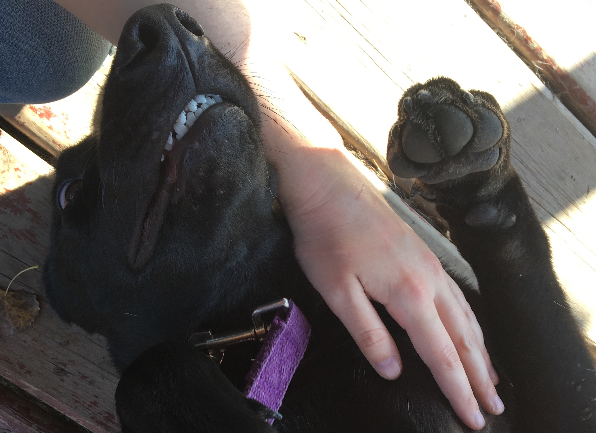

The Dog Gallery
Here are some of my favorite pups that I've met while volunteering at the Humane Society or while out and about! There are plenty of furry friends at the Humane Society who are just waiting for a life companion to come through the door.


